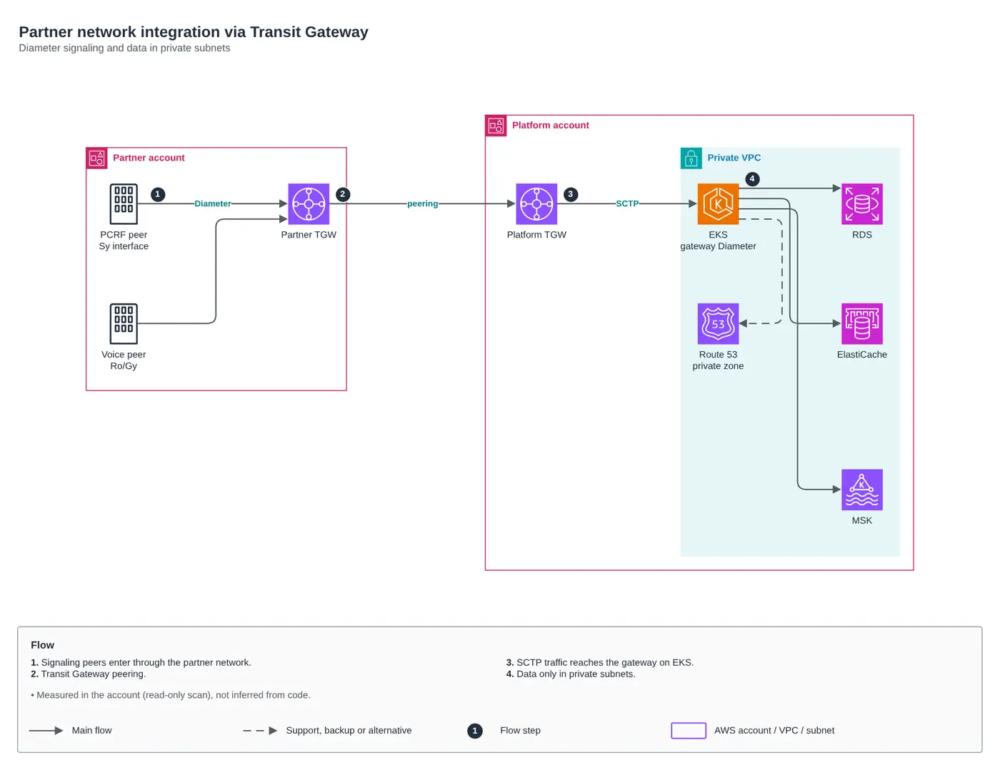

AWS · CCoE, landing zone and platform of a telecom operator (2025-2026)
Partner network integration
Transit Gateway peering for Diameter signaling and data in private subnets.

Raphael Santos3 min read

01Problem
Platform needing to exchange Diameter signaling with a partner network.
02Solution
Transit Gateway peering as the single point, SCTP to the gateway on EKS, private DNS between sides and data services in private subnets only. All measured in the account, not inferred.
Partner network integration via Transit Gateway
- Signaling peers enter through the partner network.
- Transit Gateway peering.
- SCTP traffic reaches the gateway on EKS.
- Data only in private subnets.
The code
module "kms_key" {
source = "git::https://github.com/Raphaelfcs/automacao_terraform.git//aws/kms-key"
name_prefix = local.name_prefix
deletion_window_in_days = 7
tags = local.tags
}
module "vpc" {
source = "git::https://github.com/Raphaelfcs/automacao_terraform.git//aws/vpc"
name_prefix = local.name_prefix
cidr_block = "10.20.0.0/16"
azs = ["sa-east-1a", "sa-east-1b"]
single_nat_gateway = true
eks_cluster_name = "demo-dev"
tags = local.tags
}03Discussion
Terraform modules used:
aws/kms-keyPlatform KMS key (CMK)aws/vpcThree-tier VPCaws/transit-gateway-attachmentVPC attachment to Transit Gatewayaws/route53-private-zoneMulti-account private Route 53 zoneaws/msk-kafkaAmazon MSK with SASL/IAMaws/elasticache-redisEncrypted ElastiCache Valkey/Redisaws/rds-instancePrivate RDS MySQL/PostgreSQL
FinOps: where the cost is
| Component | What drives cost | Lever |
|---|---|---|
aws/rds-instance | RDS instance class and Multi-AZ | right-size from real metrics, reserve PRD and stop HML/DEV after hours |
aws/msk-kafka | MSK brokers and storage | per-topic retention, tiered storage and Graviton brokers |
aws/vpc | NAT Gateway per AZ and the traffic it processes | a single NAT in DEV and VPC endpoints for S3/ECR to keep traffic off the NAT |
aws/transit-gateway-attachment | Transit Gateway attachments and processed GB | consolidate attachments and keep high-volume traffic off the TGW |
In the repository, aws/tag-compliance, aws/finops-cost-report, aws/cur-focus-export and aws/instance-scheduler close the loop: mandatory tags, cost report, CUR/FOCUS export and shutdown schedule.